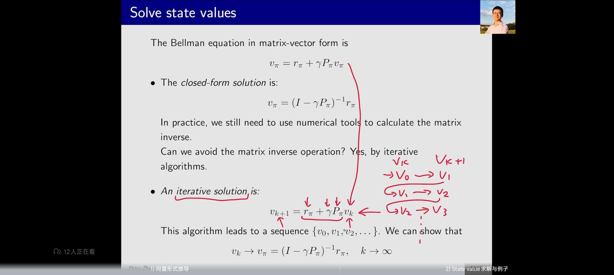

强化学习学习笔记（二）贝尔曼方程
策略评估的方式
如何不断的改进策略？用什么来评估：答案是基于return进行评估。 return是一条控制轨迹能够获得的奖励或折扣奖励的和，能够用来评估当前状态的价值。
状态的价值
举个例子，在Grid机器人里，现在有3条路径：  路径1：智能体从S1到S3，奖励是0，从S3到S4，奖励是1，呆在S4，一直有奖励1.
路径2：智能体从S1到S2，奖励是-1，从S2到S4，奖励是1，呆在S4，一直有奖励1.
路径3：智能体有50%概率走S1到S3，从S3到S4；有50%概率走S1到S2到S4。最后呆在S4，一直有奖励1.
路径1：智能体从S1到S3，奖励是0，从S3到S4，奖励是1，呆在S4，一直有奖励1.
路径2：智能体从S1到S2，奖励是-1，从S2到S4，奖励是1，呆在S4，一直有奖励1.
路径3：智能体有50%概率走S1到S3，从S3到S4；有50%概率走S1到S2到S4。最后呆在S4，一直有奖励1.
路径1的总回报： 0 + γ × 1 + γ² × 1 + γ³ × 1 + ..... = γ/(1 − γ)
路径2的总回报： γ/(1 − γ) − 1
路径3的总回报： 0.5 × [γ/(1 − γ) − 1] + 0.5 × γ/(1 − γ)
这里是按照概率进行加权，等价于求期望 这里γ是折扣因子。 可见 return1＞return3＞return2
说明路径1的策略是最优的，路径2的策略是最烂的，然后路径3的策略介于二者中间。这里案例说明了策略的评估的重要性。
接下来问题来了，考虑一个循环的格子，如何计算格子里每个状态的return？
 根据定义来，定义v1是从状态s1出发能够得到的return，从而有：
$$
v_1=r_1+γr_2+γ²r_3+...\\
v_2=r_2+γr_3+γ²r_4+...\\
v_3=r_3+γr_4+γ²r_1+...\\
v_4=r_4+γr_1+γ²r_2+...\\
$$
可以看到，要v1是无穷无尽可以计算下去的，因为在这个例子中状态会出现往复。我们同时会发现上面的式子可以写成下面的形式，这就是启发我们：一个状态和另一个状态之间，是存在互相影响的，可以通过联立不同的状态的价值，把不同状态下对应的价值求解出来，这种特性叫做
“自举策略（bootstrap）” $$
v_1=r_1+γv_2\\
v_2=r_2+γv_3\\
v_3=r_3+γv_4\\
v_4=r_4+γv_1\\
$$
根据定义来，定义v1是从状态s1出发能够得到的return，从而有：
$$
v_1=r_1+γr_2+γ²r_3+...\\
v_2=r_2+γr_3+γ²r_4+...\\
v_3=r_3+γr_4+γ²r_1+...\\
v_4=r_4+γr_1+γ²r_2+...\\
$$
可以看到，要v1是无穷无尽可以计算下去的，因为在这个例子中状态会出现往复。我们同时会发现上面的式子可以写成下面的形式，这就是启发我们：一个状态和另一个状态之间，是存在互相影响的，可以通过联立不同的状态的价值，把不同状态下对应的价值求解出来，这种特性叫做
“自举策略（bootstrap）” $$
v_1=r_1+γv_2\\
v_2=r_2+γv_3\\
v_3=r_3+γv_4\\
v_4=r_4+γv_1\\
$$
我们可以把上面的式子转化为矩阵形式表达，也就是下面这张图所要展示的，并且从中抽取出共性的公式：
v = r + γPv
这就是bellman公式。其中P是状态转移的概率矩阵。  贝尔曼公式的内涵在于告诉我们：一个状态的价值依赖于其他的状态。
我们依据贝尔曼方程，可以定义出价值函数，即： Vπ(s) = E[Gt|St = s] = E[Rt|St] + γ∑E[Gt + 1|St]
这里的Gt就是前面所说的折扣奖励的和，所以价值函数就表示在当前状态下能够获得的期望折扣回报和。
状态函数如何计算呢，我们为了在一般情况下计算，需要将上面的式子展开，并且用全概率公式算期望。
贝尔曼公式的内涵在于告诉我们：一个状态的价值依赖于其他的状态。
我们依据贝尔曼方程，可以定义出价值函数，即： Vπ(s) = E[Gt|St = s] = E[Rt|St] + γ∑E[Gt + 1|St]
这里的Gt就是前面所说的折扣奖励的和，所以价值函数就表示在当前状态下能够获得的期望折扣回报和。
状态函数如何计算呢，我们为了在一般情况下计算，需要将上面的式子展开，并且用全概率公式算期望。
其中第一项E[Rt|St]是即时奖励的期望，反映了当前状态下，执行各个动作能够获得的即时奖励和，计算方式是： E[Rt|St] = ∑aπ(a|s)[∑rp(r|s, a)r] 第二项∑E[Gt + 1|St]是评估当前状态下，后续的折扣回报和。由于马尔科夫性，后续的回报和又由当前的状态下执行一个动作，到下一个状态决定，所以上面的式子就变成了当前状态下，执行动作转移到下一个状态，下一个状态的折扣回报和Gt + 1。 E[Gt + 1|St] = ∑aπ(a|s)[∑s′p(s′|s, a)Vπ(St + 1)] 上面的式子还可以合并同类项，提出∑aπ(a|s),也就变成了 Vπ(s) = E[Gt|St = s] = ∑aπ(a|s)[∑rp(r|s, a)r] + ∑s′p(s′|s, a)Vπ(s′)] 这里，Vπ(s)和Vπ(s′)都是状态的价值，求解方式就和上面的方式一样，用“自举策略”得到。 π(a|s)指的是策略网络，通过策略的评估来求解 p(r|s, a), p(s′|s, a)都是状态转移概率，这些应该由动态模型（model）给出，也就是model-based，如果没有这样的model，就通过model-free的方式探索得到。
为什么要求解state value：给定一个策略，求解这个策略对应的状态价值，这个过程叫做策略评估（policy evaluation） 贝尔曼公式的向量形式，由上面的公式可知，贝尔曼公式的一般向量形式可以写成： vπ = rπ + γPπvπ 这里的核心是用r和P来分别代表奖励模型和状态转移概率模型。其中v和r是向量，即vπ = [v1，v2, v3, ..., vn]都是向量化的表达，P是矩阵，用来描述每个状态转移的概率。求解上述式子，最直观的方式是求逆，即：
vπ = (I − γPπ)−1rπ
但是这种方式，要求矩阵的逆，效率非常低。。  解决的方式是用迭代的方法避免矩阵求逆，也就是让vk先从V0开始，迭代得到V1，或者其他的状态，然后再举一反三得到其他状态，最终由策略迭代的方式，使得vk收敛到vπ
动作的价值 动作的价值指的是智能体在某个状态下，执行某个动作的价值，这和智能体的策略密切相关。 动作的价值定义如下
qπ(s, a) = E[Gt|St = s, At = a]
由全概率公式，我们可以得知：
vπ(s) = ∑aπ(a|s)E[Gt|St = s, At = a]
从而可以得到v和q值之间的关系，也就是全概率公式表示的一个公式。
vπ(s) = ∑aπ(a|s)qπ(s, a)